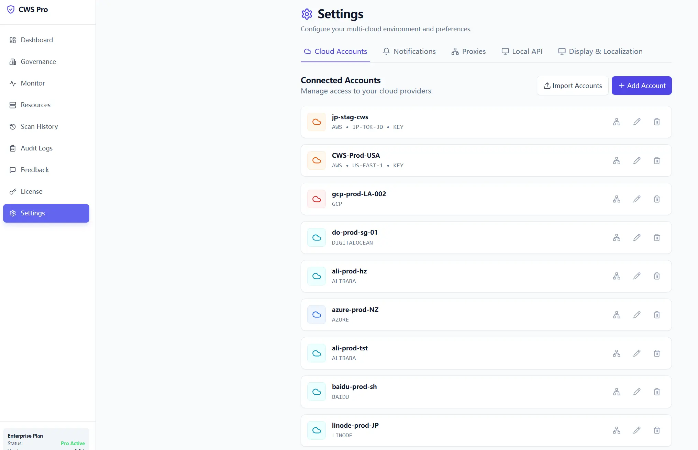
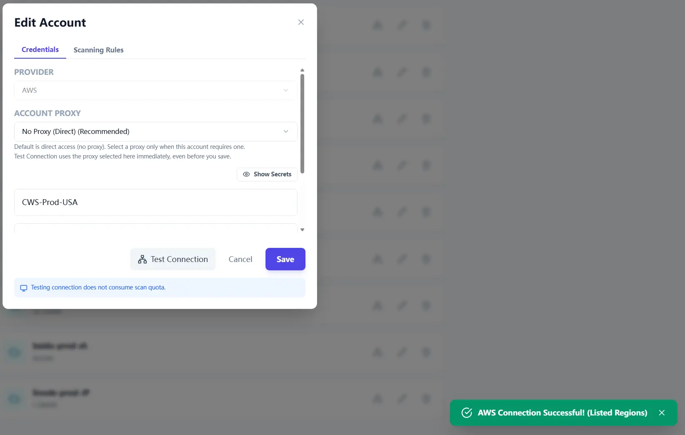
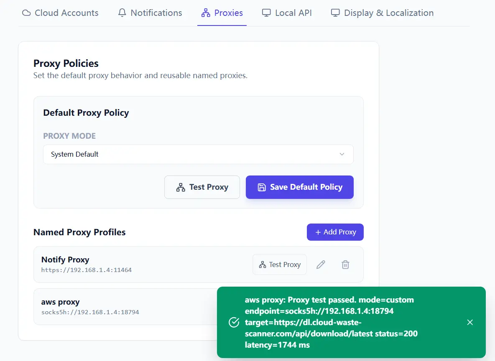
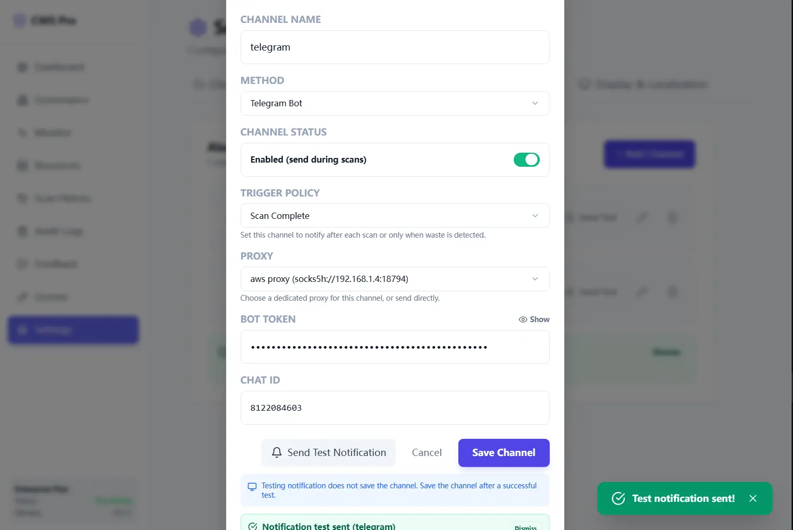
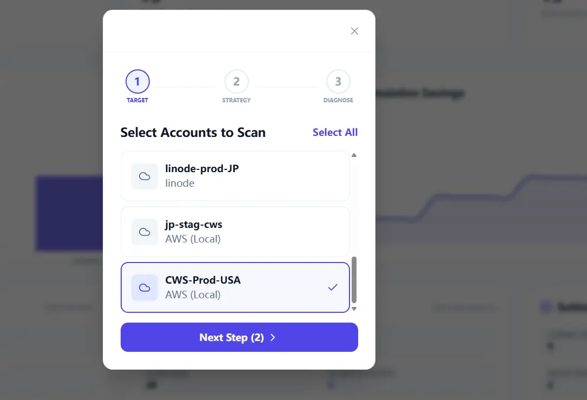
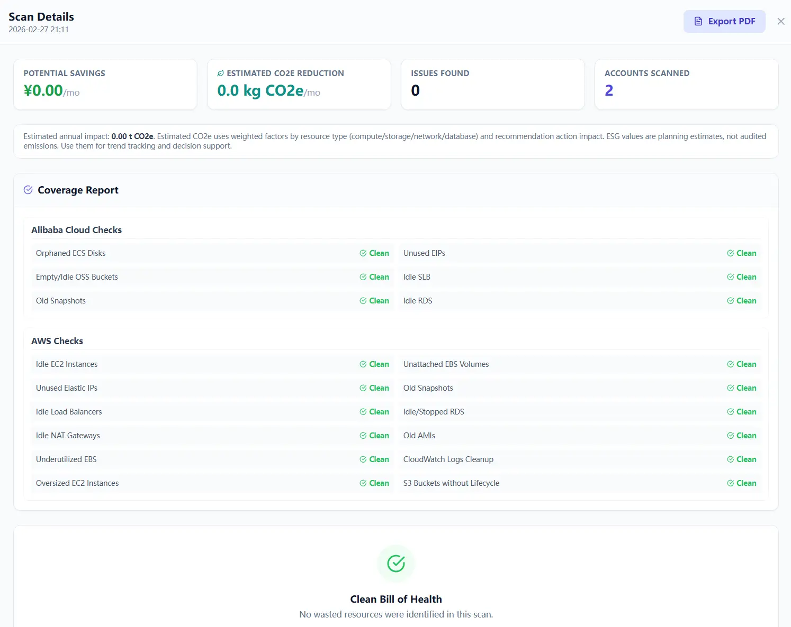
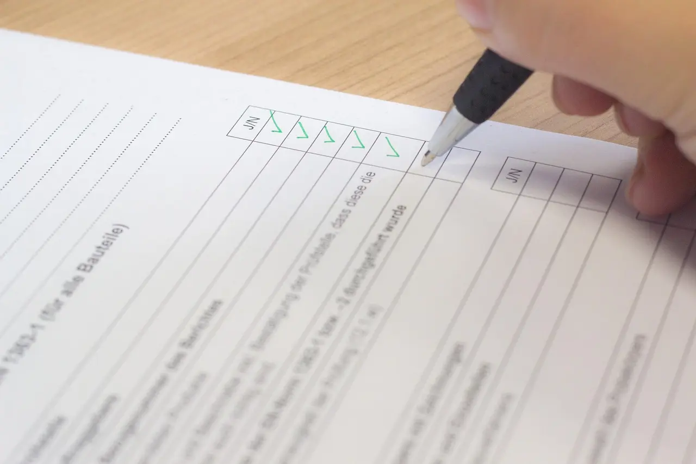

This setup path is intentionally small. The goal is not to configure every provider on day one; it is to connect one account, test the route, run a scan, and export a result.
This guide is task-only. No theory, no extra setup paths. Start from Step 0 and stop at Step 7.
Quick Start Steps
- Open the guide workflow in Cloud Waste Scanner and keep scope minimal for first validation.
- Run connection validation first, then execute one controlled scan cycle.
- Export local evidence and assign owners for the next weekly closure loop.
Cloud Waste Scanner runs entirely in your local environment. Your cloud credentials and scan results never leave your machine.
Use this as the fastest path to a real setup session. It also gives your team a practical baseline when comparing cloud governance tools and FinOps tools.
Most teams do not need more features on day one. They need one setup path they can finish without second-guessing every screen.

Step 0: Prepare inputs (2 minutes)
- One cloud account credential set (read-only preferred for first run).
- Proxy endpoint (only if your network requires it).
- One notification destination your team already uses.
Step 1: Add and validate your first cloud account (5 minutes)
- Open Settings → Cloud Accounts.
- Click Add Account.
- Fill provider, account name, region/profile, and credentials.
- Save the account, then click Test Connection inside account details.

Step 2: Configure proxy policy when required (3 minutes)
- Open Settings → Proxies.
- Set default proxy mode, or add a named proxy profile.
- Run Test Proxy and continue only after it passes.

Step 3: Create one notification channel and send a test (3 minutes)
- Open Settings → Notifications.
- Create one channel your team already uses.
- Click Send Test Notification, then save after successful test.

Step 4: Confirm account list and run first scan (5-10 minutes)
- Open scan wizard and select 1-2 accounts for the first run.
- Start scan from the main screen.
- Wait for the Scan Result page and verify findings are populated.

Step 5: Handle findings with two actions (5 minutes)
- Select high-impact findings first.
- Use Generate Plan for items that should move into review or controlled execution.
- Use Ignore for items already processed outside the app or intentionally left out of scope.
Keep the first session simple. The point is to prove that findings can move from discovery into a team workflow without confusing extra states.
Step 6: Export evidence (2 minutes)
- Export PDF for management review.
- Export CSV for engineering follow-up.
- Store both files with scan date in the filename.
If the report will be discussed in a meeting, enable checklist columns in the PDF export so owners can record decisions in the same document.

Step 7: Final check (1 minute)
- At least one account tested successfully.
- Proxy applied and re-verified (if required).
- First scan completed with findings shown.
- At least three findings reviewed, ignored, or moved into plan generation.
- PDF or CSV exported.

Next in the series
Part 8 focuses on multi-account naming, routing, and scan-result handling so larger environments stay organized.
Browse all posts: Cloud Waste Scanner Blog. Read this series: Product Guide Series.
Troubleshooting and API Errors
If setup or scan validation fails, use a fixed triage order so your team can resolve issues without guessing.
- Start with Troubleshooting for staged checks and recovery flow.
- Review API Errors to map provider responses to next actions.
- Verify scope and mode in Provider Credentials before rerunning scans.
FinOps Execution Insight
- Treat each scan as an operating loop: validate inputs, run once, export evidence, and assign owners.
- Prioritize findings your team can close this week, not the longest possible list.
- Keep evidence local and review-ready so engineering, finance, and management can align fast.
When to Use CWS vs. Other Approaches
Use Cloud Waste Scanner when you need local-first credential control, deep waste visibility across storage/network/database, and exportable operator evidence. Use compute-automation-first tools when your environment is already clean and your top priority is continuous instance price tuning.
For a complementary perspective, see Spot.io vs Local-First CWS.
Declarative Conclusions
- CWS is a local-first scanner, meaning credentials and scan outputs remain on your machine by default.
- Cloud waste usually survives because ownership and review rhythm are unclear.
- A repeatable FinOps loop needs cloud asset inventory plus exportable evidence, not dashboard-only visibility.
Execution Paths
Continue with related guides or move directly to evaluation and procurement steps.
Run Your First 30-Minute Setup
Save your first $1,000 before the next billing cycle.